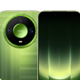

华为手机Mate 系列Pura 系列Pocket 系列nova 系列畅享系列配件HUAWEI Mate XT 2 非凡大师最新¥19999 起了解更多购买Mate 系列非凡旗舰HUAWEI Mate XTs 非凡大师¥17999 起了解更多购买HUAWEI Mate XT 2 非凡大师¥19999 起了解更多购买HUAWEI Mate X7¥12999 起了解更多购买HUAWEI Mate X6¥12999 起了解更多购买HUAWEI Mate 80 RS 非凡大师¥11999 起了解更多购买HUAWEI Mate 80 Pro Max 风驰版¥9499 起了解更多购买HUAWEI Mate 80 Pro Max¥8999 起了解更多购买HUAWEI Mate 70 Pro+¥8499 起了解更多购买HUAWEI Mate 80 Pro¥6999 起了解更多购买HUAWEI Mate 70 Pro¥6499 起了解更多购买HUAWEI Mate 70 Pro 优享版¥6199 起了解更多购买HUAWEI Mate 80¥5499 起了解更多购买HUAWEI Mate 70 Air¥4199 起了解更多购买HUAWEI Mate 70 RS 非凡大师了解更多Pura 系列HUAWEI Pura X Max¥10999 起了解更多购买HUAWEI Pura 80 Ultra¥9999 起了解更多购买HUAWEI Pura X¥7499 起了解更多购买HUAWEI Pura 80 Pro+¥7999 起了解更多购买HUAWEI Pura 90 Pro Max¥6499 起了解更多购买HUAWEI Pura 80 Pro¥6499 起了解更多购买HUAWEI Pura X View¥5999 起了解更多购买HUAWEI Pura 90 Pro¥5499 起了解更多购买HUAWEI Pura 90¥4699 起了解更多购买HUAWEI Pura 80¥4699 起了解更多购买Pocket 系列美学新篇HUAWEI Pocket 2 优享版了解更多查看全部nova 系列HUAWEI nova 16 Ultra¥4699 起了解更多购买HUAWEI nova 16 Pro¥4299 起了解更多购买HUAWEI nova 16¥3399 起了解更多购买HUAWEI nova 16 SE最新¥2699 起了解更多购买HUAWEI nova 16z¥2699 起了解更多购买HUAWEI nova 15 Ultra¥4499 起了解更多购买HUAWEI nova 15 Pro¥3799 起了解更多购买HUAWEI nova 15¥2999 起了解更多购买HUAWEI nova 14 Ultra¥4199 起了解更多购买HUAWEI nova 14 Pro了解更多HUAWEI nova 14 活力版¥2399 起了解更多购买畅享系列超能续航华为畅享 90 Pro Max¥1899 起了解更多购买华为畅享 90 Plus¥1499 起了解更多购买华为畅享 90¥1299 起了解更多购买华为畅享 80了解更多华为畅享 70X 尊享版了解更多华为畅享 90m Plus了解更多华为畅享 70X了解更多华为畅享 70S了解更多查看全部为什么选择华为手机?影像全焦段，出片真实有质感设计美学新风向，款款有新意通信信号好，还有卫星通信可靠性抗刮耐摔，硬实力AI鸿蒙 AI，智慧新世界续航长续航，充电快隐私应用管得住手机穿戴电脑平板智慧屏耳机音箱全屋智能路由器HarmonyOS 7服务支持零售店商用华为商城消费者服务热线9508007*24小时 | 普通话主页手机穿戴鸿蒙电脑笔记本显示器打印机平板智慧屏耳机音箱路由器配件商用产品教育商店保修政策上门安装维修服务保修期及权益查询维修备件价格服务进度查询联系我们服务隐私声明商用服务终端云服务华为商城 APP我的华为 APP华为手机助手华为电脑管家HarmonyOS 7预置应用公示HUAWEI HiCarHUAWEI HiPlay华为新闻华为活动服务店查询零售店查询关于我们可持续发展隐私华为商城HarmonyOS 开发者华为云企业业务运营商网络华为集团加入华为内容举报在线客服 | 7*24小时粤A2-20044005号网站地图使用条款隐私声明关于cookies法律信息China - 简体中文
Mate 系列非凡旗舰HUAWEI Mate XTs 非凡大师¥17999 起了解更多购买HUAWEI Mate XT 2 非凡大师¥19999 起了解更多购买HUAWEI Mate X7¥12999 起了解更多购买HUAWEI Mate X6¥12999 起了解更多购买HUAWEI Mate 80 RS 非凡大师¥11999 起了解更多购买HUAWEI Mate 80 Pro Max 风驰版¥9499 起了解更多购买HUAWEI Mate 80 Pro Max¥8999 起了解更多购买HUAWEI Mate 70 Pro+¥8499 起了解更多购买HUAWEI Mate 80 Pro¥6999 起了解更多购买HUAWEI Mate 70 Pro¥6499 起了解更多购买HUAWEI Mate 70 Pro 优享版¥6199 起了解更多购买HUAWEI Mate 80¥5499 起了解更多购买HUAWEI Mate 70 Air¥4199 起了解更多购买HUAWEI Mate 70 RS 非凡大师了解更多
Pura 系列HUAWEI Pura X Max¥10999 起了解更多购买HUAWEI Pura 80 Ultra¥9999 起了解更多购买HUAWEI Pura X¥7499 起了解更多购买HUAWEI Pura 80 Pro+¥7999 起了解更多购买HUAWEI Pura 90 Pro Max¥6499 起了解更多购买HUAWEI Pura 80 Pro¥6499 起了解更多购买HUAWEI Pura X View¥5999 起了解更多购买HUAWEI Pura 90 Pro¥5499 起了解更多购买HUAWEI Pura 90¥4699 起了解更多购买HUAWEI Pura 80¥4699 起了解更多购买
nova 系列HUAWEI nova 16 Ultra¥4699 起了解更多购买HUAWEI nova 16 Pro¥4299 起了解更多购买HUAWEI nova 16¥3399 起了解更多购买HUAWEI nova 16 SE最新¥2699 起了解更多购买HUAWEI nova 16z¥2699 起了解更多购买HUAWEI nova 15 Ultra¥4499 起了解更多购买HUAWEI nova 15 Pro¥3799 起了解更多购买HUAWEI nova 15¥2999 起了解更多购买HUAWEI nova 14 Ultra¥4199 起了解更多购买HUAWEI nova 14 Pro了解更多HUAWEI nova 14 活力版¥2399 起了解更多购买
畅享系列超能续航华为畅享 90 Pro Max¥1899 起了解更多购买华为畅享 90 Plus¥1499 起了解更多购买华为畅享 90¥1299 起了解更多购买华为畅享 80了解更多华为畅享 70X 尊享版了解更多华为畅享 90m Plus了解更多华为畅享 70X了解更多华为畅享 70S了解更多查看全部
消费者服务热线9508007*24小时 | 普通话主页手机穿戴鸿蒙电脑笔记本显示器打印机平板智慧屏耳机音箱路由器配件商用产品教育商店保修政策上门安装维修服务保修期及权益查询维修备件价格服务进度查询联系我们服务隐私声明商用服务终端云服务华为商城 APP我的华为 APP华为手机助手华为电脑管家HarmonyOS 7预置应用公示HUAWEI HiCarHUAWEI HiPlay华为新闻华为活动服务店查询零售店查询关于我们可持续发展隐私华为商城HarmonyOS 开发者华为云企业业务运营商网络华为集团加入华为内容举报在线客服 | 7*24小时粤A2-20044005号网站地图使用条款隐私声明关于cookies法律信息China - 简体中文